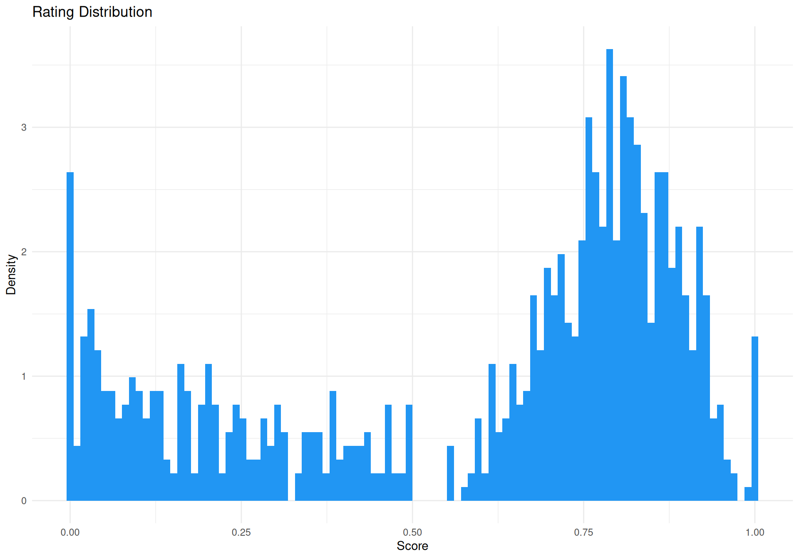
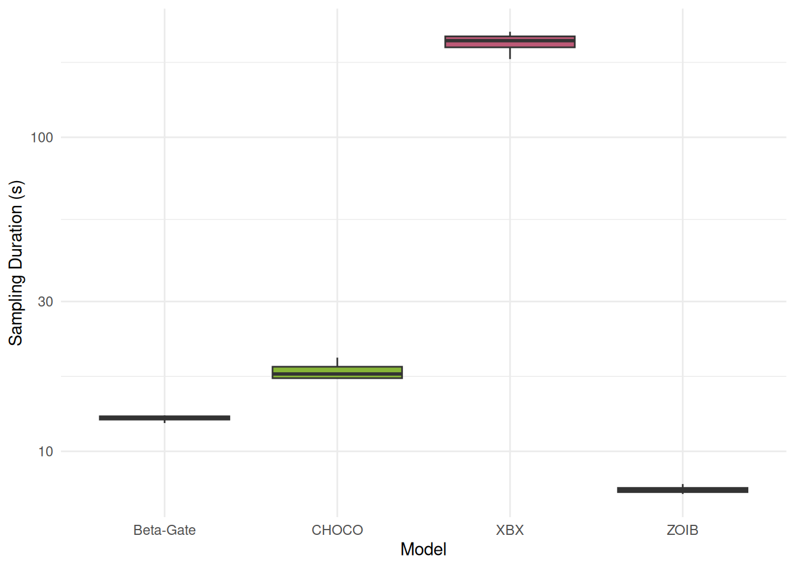
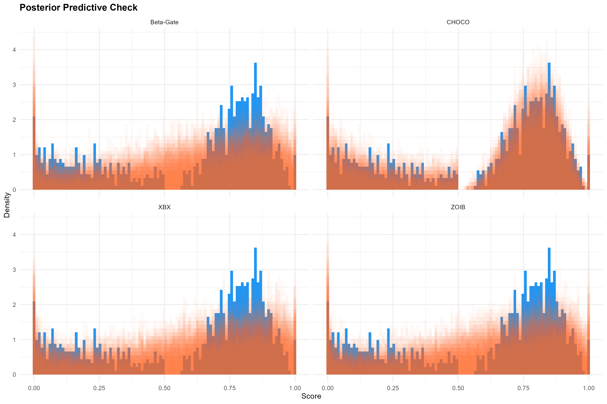
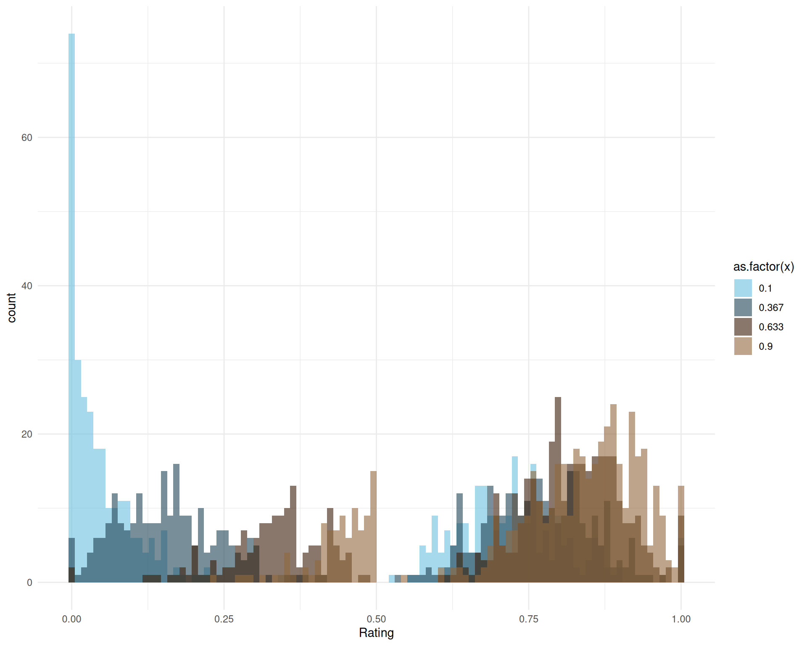
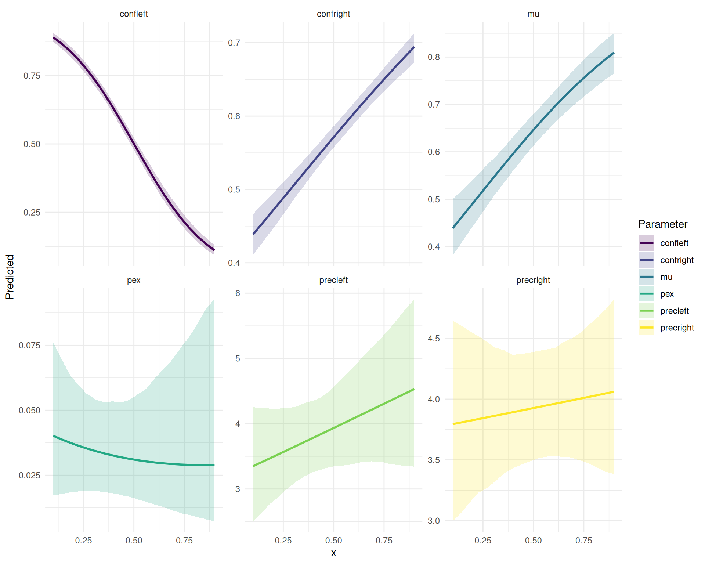
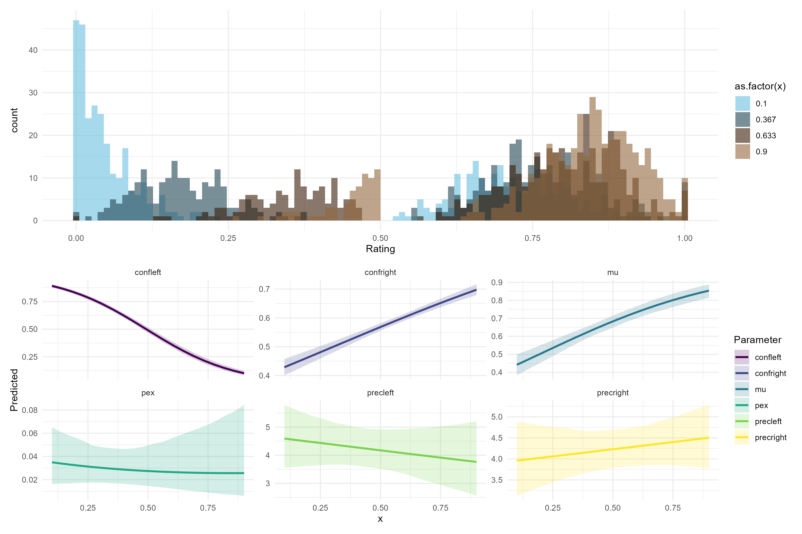
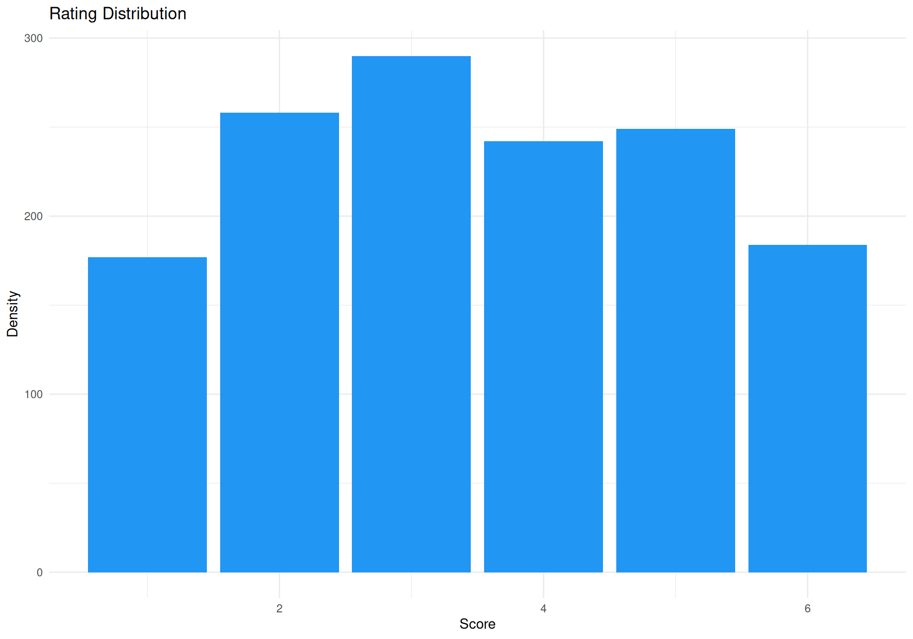
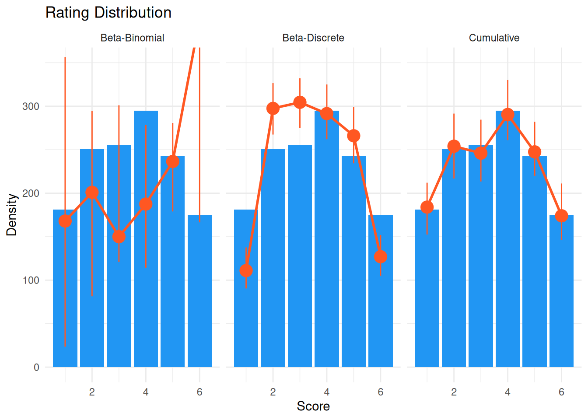
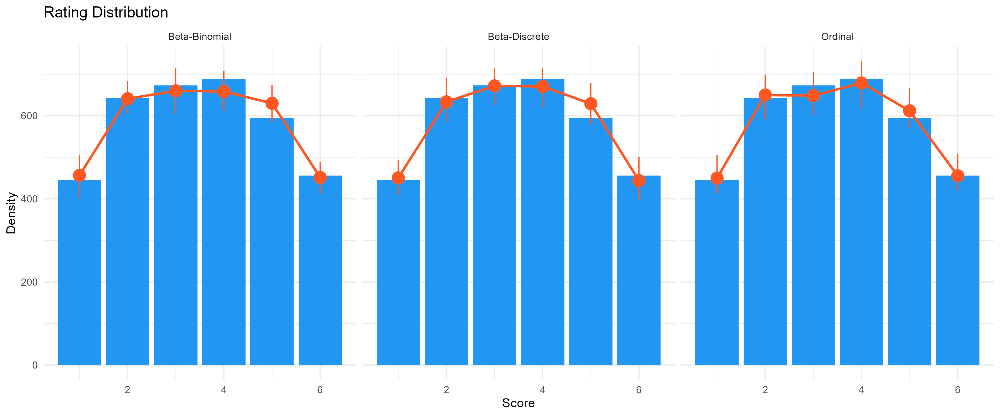

Analog Scales
Simulate Data
df <- data.frame()
for(x in seq(0.1, 0.9, by = 0.1)) {
score <- rchoco(n = 100, p = 0.4 + x / 2, confright = 0.4 + x / 3,
confleft = 1-x, pex = 0.03, bex = 0.6, pmid = 0)
df <- rbind(df, data.frame(x = x, score = score))
}
df |>
ggplot(aes(x = score, y = after_stat(density))) +
geom_histogram(bins = 100, fill = "#2196F3") +
labs(title = "Rating Distribution", x = "Score", y = "Density") +
theme_minimal()
Models
ZOIB Model
The Zero-One Inflated Beta (ZOIB) model assumes that the data can be modeled as a mixture of two logistic regression processes for the boundary values (0 and 1) and a beta regression process for the continuous proportions in-between.
f <- bf(
score ~ x,
phi ~ x,
zoi ~ x,
coi ~ x,
family = zero_one_inflated_beta()
)
m_zoib <- brm(f,
data = df, family = zero_one_inflated_beta(), init = 0,
chains = 4, iter = 500, backend = "cmdstanr"
)
m_zoib <- brms::add_criterion(m_zoib, "loo") # For later model comparison
saveRDS(m_zoib, file = "models/m_zoib.rds")XBX Model
Kosmidis & Zeileis (2024) introduce a generalization of the classic beta regression model with extended support [0, 1]. Specifically, the extended-support beta distribution (xbeta) leverages an underlying symmetric four-parameter beta distribution with exceedence parameter nu to obtain support [-nu, 1 + nu] that is subsequently censored to [0, 1] in order to obtain point masses at the boundary values 0 and 1.
Beta-Gate Model
The Beta-Gate model corresponds to a reparametrized Ordered Beta model (Kubinec, 2023). In this model, observed 0s and 1s represent instances where the underlying continuous response tendency fell beyond lower or upper boundary points (‘gates’).
f <- bf(
score ~ x,
phi ~ x,
pex ~ x,
bex ~ x,
family = betagate()
)
m_betagate <- brm(f,
data = df, family = betagate(), stanvars = betagate_stanvars(), init = 0,
chains = 4, iter = 500, backend = "cmdstanr"
)
m_betagate <- brms::add_criterion(m_betagate, "loo") # For later model comparison
saveRDS(m_betagate, file = "models/m_betagate.rds")CHOCO Model
See the documentation of the Choice-Confidence (CHOCO).
f <- bf(
score ~ x,
confright ~ x,
confleft ~ x,
precright ~ x,
precleft ~ x,
pex ~ x,
bex ~ x,
pmid = 0,
family = choco()
)
m_choco <- brm(f,
data = df, family = choco(), stanvars = choco_stanvars(), init = 0,
chains = 4, iter = 500, backend = "cmdstanr"
)
m_choco <- brms::add_criterion(m_choco, "loo") # For later model comparison
saveRDS(m_choco, file = "models/m_choco.rds")Model Comparison
#> Loading required namespace: rstanModel Fit
We can compare these models together using the loo package, which shows that CHOCO provides a significantly better fit than the other models.
Code
loo::loo_compare(m_zoib, m_xbx, m_betagate, m_choco) |>
parameters(include_ENP = TRUE)| Name | LOOIC | ENP | ELPD | Difference | Difference_SE | p |
|---|---|---|---|---|---|---|
| m_choco | -770.7 | 8.93 | 385.33 | 0.00 | 0.00 | |
| m_betagate | -159.8 | 7.21 | 79.88 | -305.45 | 16.68 | < .001 |
| m_zoib | -159.7 | 7.00 | 79.86 | -305.46 | 16.99 | < .001 |
| m_xbx | -145.0 | 5.11 | 72.51 | -312.81 | 16.81 | < .001 |
Note that you can also use report::report() on the output of loo_compare() to get a textual summary.
Sampling Duration
rbind(
data_modify(attributes(m_zoib$fit)$metadata$time$chain, Model="ZOIB"),
data_modify(attributes(m_xbx$fit)$metadata$time$chain, Model="XBX"),
data_modify(attributes(m_betagate$fit)$metadata$time$chain, Model="Beta-Gate"),
data_modify(attributes(m_choco$fit)$metadata$time$chain, Model="CHOCO")
) |>
ggplot(aes(x = Model, y = total, fill = Model)) +
geom_boxplot() +
labs(y = "Sampling Duration (s)") +
scale_fill_material_d(guide = "none") +
scale_y_log10() +
theme_minimal() 
Posterior Predictive Check
Running posterior predictive checks allows to visualize the predicted distributions from various models. We can see how typical Beta-related models fail to capture the bimodal nature of the data, which is well captured by the CHOCO model.
Note: iterations controls the actual number of iterations used (e.g., for the point-estimate) and keep_iterations the number included.
Code
pred <- rbind(
estimate_prediction(m_zoib, keep_iterations = 50, iterations = 50) |>
reshape_iterations() |>
data_modify(Model = "ZOIB"),
estimate_prediction(m_xbx, keep_iterations = 50, iterations = 50) |>
reshape_iterations() |>
data_modify(Model = "XBX"),
estimate_prediction(m_betagate, keep_iterations = 50, iterations = 50) |>
reshape_iterations() |>
data_modify(Model = "Beta-Gate"),
estimate_prediction(m_choco, keep_iterations = 50, iterations = 50) |>
reshape_iterations() |>
data_modify(Model = "CHOCO")
)
p <- df |>
ggplot(aes(x = score, y = after_stat(density))) +
geom_histogram(bins = 100, fill = "#2196F3") +
labs(title = "Posterior Predictive Check", x = "Score", y = "Density") +
theme_minimal() +
theme(plot.title = element_text(face = "bold")) +
geom_histogram(
data = pred, aes(x = iter_value, group = as.factor(iter_group)),
bins = 100, alpha = 0.03, position = "identity", fill = "#FF5722"
) +
facet_wrap(~Model)
p
### Effect VisualisationWe can see how the predicted distribution changes as a function of x and gets “pushed” to the right. Moreover, we can also visualize the effect of x on specific parameters, showing that it mostly affects the parameter conf (the mean confidence - i.e., central tendency - on the right side), confleft (the relative confidence of the left side), and mu, which corresponds to the p probability of answering on the right. This is consistent with our expectations, and reflects the larger and more concentrated mass on the right of the scale for higher value of x (in brown).
Code
p1 <- estimate_prediction(m_choco, data = "grid", length = 4, keep_iterations = 500, iterations = 500) |>
reshape_iterations() |>
ggplot(aes(x = iter_value, fill = as.factor(x))) +
geom_histogram(alpha = 0.6, bins = 100, position = "identity") +
scale_fill_bluebrown_d() +
labs(x = "Rating") +
theme_minimal()
p1
Code
# Predict various parameters
pred_params <- data.frame()
for(param in c("mu", "confright", "confleft", "precright", "precleft", "pex")) {
pred_params <- m_choco |>
estimate_prediction(data = "grid", length = 20, predict = param) |>
as.data.frame() |>
data_modify(Parameter = param) |>
rbind(pred_params)
}
p2 <- pred_params |>
ggplot(aes(x = x, y = Predicted)) +
geom_ribbon(aes(ymin = CI_low, ymax = CI_high, fill = Parameter), alpha = 0.2) +
geom_line(aes(color = Parameter), linewidth = 1) +
facet_wrap(~Parameter, scales = "free_y", ncol=3) +
scale_fill_viridis_d() +
scale_color_viridis_d() +
theme_minimal()
p2

Likert Scales
Simulate Data
set.seed(33)
df <- data.frame()
for(x in seq(0.2, 0.8, by = 0.1)) {
rating <- rbetadiscrete(n=200, mu = x, phi = 3, k = 6)
df <- rbind(df, data.frame(x = x, rating = rating))
}
df |>
ggplot(aes(x = rating)) +
geom_bar(stat = "count", fill = "#2196F3") +
labs(title = "Rating Distribution", x = "Score", y = "Density") +
theme_minimal()
Models
Beta-Binomial
The Beta-Binomial is a common default for bounded count data, though it wasn’t designed for it. Its distribution consists of a two-stage mixture: conditional on a success probability p, the response follows a , while p itself varies according to a Beta distribution. This lets it absorb extra-binomial variation (overdispersion) arising when raters differ systematically in their response tendencies. This model makes sense when a rating is literally a count of successes a(e.g. items endorsed out of a checklist), but for a single holistic judgment on a K-point scale, it’s better understood as a descriptive tool than a model of the response process itself.
Note: the Beta-Binomial distribution in brms is defined on [0, n], so we need to shift the ratings down by 1 (1-6 -> 0-5).
f <- bf(
rating | trials(5) ~ x,
phi ~ x,
family = brms::beta_binomial()
)
m_betabinomial <- brm(f,
data = data_modify(df, rating = rating - 1),
family = brms::beta_binomial(), init = 0,
chains = 4, iter = 500, backend = "cmdstanr",
)
m_betabinomial <- brms::add_criterion(m_betabinomial, "loo") # For later model comparison
saveRDS(m_betabinomial, file = "models/m_betabinomial.rds")Beta-Discrete
The Discrete Beta model (Sciandra, 2024) was developed for modeling discrete rating data, i.e., discrete responses on a fixed integer scale (1-K). It assumes the observed rating is the discretised counterpart of a continuous, unobservable latent response, but rather than estimating threshold parameters (like the Ordinal model), the Discrete Beta fixes these thresholds at evenly spaced points, and instead lets a Beta distribution govern the proportions. This reverses the usual logic (fixed distribution, estimated thresholds) and, because the Beta distribution can take on a wide range of shapes (including non-monotonic convex shapes like “J” and “U” shapes that many ordinal models struggle to reproduce), it yields a distribution that is both highly flexible and remarkably parsimonious, requiring only two parameters regardless of how many categories the scale has.
Note: The Beta-Discrete implementation in cogmod allows for a “hurdle” (zero-inflated) component (the pzero argument), which as to be pinned to zero in the formula to use a pure Beta-Discrete distribution.
f <- bf(
rating | vint(6) ~ x,
phi ~ x,
pzero = 0, # No zero-inflation
family = betadiscrete()
)
m_betadiscrete <- brm(f,
data = df, family = betadiscrete(), stanvars = betadiscrete_stanvars(), init = 0,
chains = 4, iter = 500, backend = "cmdstanr"
)
m_betadiscrete <- brms::add_criterion(m_betadiscrete, "loo") # For later model comparison
saveRDS(m_betadiscrete, file = "models/m_betadiscrete.rds")Ordinal (Cumulative)
Ordinal models (also known as cumulative models) posit a continuous latent variable, partitioned by estimated thresholds. Because thresholds are freely estimated rather than fixed, the model doesn’t assume equally-spaced categories. This maps onto signal-detection accounts of ordinal judgment, where a continuous perception is filtered through response criteria that can be unevenly spaced (e.g. reluctance to use extremes). That flexibility comes at the cost of extra parameters relative to Beta-Discrete, and these thresholds parameters are estimated on an arbitrary latent scale, which are not really interpretable in and of themselves.
Furthermore, because these threshold parameters are highly sample-dependent, comparing latent estimates across different populations is notoriously difficult, which introduces challenges for measurement invariance and, ultimately, replicability. For instance, fitting the same cumulative model to a new sample can yield a different set of threshold estimates, but these differences do not necessarily reflect changes in the underlying cognitive process, but may instead arise from shifts in the latent scale or response criteria. Consequently, parameter estimates obtained from independently fitted ordinal models are often not directly comparable, complicating cross-study replication and meta-analytic synthesis unless a common latent scale is explicitly established.
f <- bf(
rating ~ x,
disc ~ x,
family = brms::cumulative()
)
m_cumulative <- brm(f,
data = df, family = brms::cumulative(), init = 0,
chains = 4, iter = 500, backend = "cmdstanr"
)
m_cumulative <- brms::add_criterion(m_cumulative, "loo") # For later model comparison
saveRDS(m_cumulative, file = "models/m_cumulative.rds")Model Comparison
We can compare these models together using the loo package.
Code
# loo::loo_compare(m_betabinomial, m_betadiscrete, m_cumulative) |>
# report::report()Code
pred <- rbind(
estimate_prediction(m_betabinomial, keep_iterations = 100, iterations = 100) |>
reshape_iterations() |>
data_modify(iter_value = iter_value + 1, Model = "Beta-Binomial"),
estimate_prediction(m_betadiscrete, keep_iterations = 100, iterations = 100) |>
reshape_iterations() |>
data_modify(Model = "Beta-Discrete"),
estimate_prediction(m_cumulative, keep_iterations = 100, iterations = 100) |>
reshape_iterations() |>
data_modify(Model = "Ordinal")
)
pred_counts <- pred |>
dplyr::summarize(n = dplyr::n(), .by = c("Model", "iter_group", "iter_value")) |>
dplyr::summarize(n_median = median(n),
ci_low = quantile(n, 0.025),
ci_high = quantile(n, 0.975),
.by = c("Model", "iter_value"))
p <- df |>
ggplot(aes(x = rating)) +
geom_bar(stat = "count", fill = "#2196F3") +
geom_line(data = pred_counts, aes(x = iter_value, y = n_median), color = "#FF5722", linewidth = 1) +
geom_pointrange(
data = pred_counts,
aes(x = iter_value, y = n_median, ymin = ci_low, ymax = ci_high),
color = "#FF5722", size = 1
) +
labs(title = "Rating Distribution", x = "Score", y = "Density") +
coord_cartesian(y = c(0, 350)) +
theme_minimal() +
facet_wrap(~Model)
p
